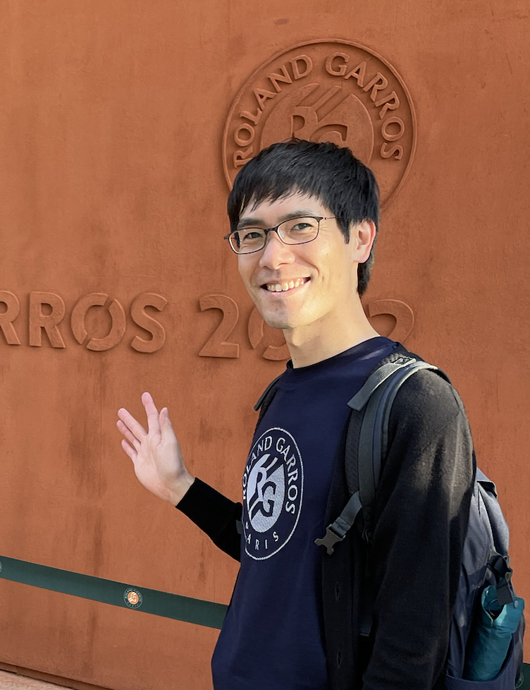

Go to my main personal website.
特任助教 (高等研究員所属・KMI兼務 YLC特任助教)
Designated Assistant Professor
E-mail: saga@$ [@以下は下記参照 | See below for domain]
Room: ES総合館6階 617号室 | ES-building Floor 6, Room 617
2014/04 - 2017/03 名古屋大学理学研究科 JSPS特別研究員(DC1)
2017/03 名古屋大学理学研究科 博士(理学)
2017/04 - 2020/03 京都大学基礎物理学研究所 JSPS特別研究員(PD)
2020/04 - 2020/08 京都大学基礎物理学研究所 研究員
2020/09 - 2021/12 パリ天文台 PSLフェロー
2022/01 - 現在 パリ天体物理学研究所 JSPS海外特別研究員
2023/04 - 現在 名古屋大学 現職
----------------------
2014/04 - 2017/03 JSPS Research Fellowship (DC1), Nagoya University
2017/03 Nagoya University, Doctor of Science
2017/04 - 2020/03 JSPS Research Fellowship (PD), Yukawa Institute for Theoretical Physics
2020/04 - 2020/08 Postdoctoral fellow, Yukawa Institute for Theoretical Physics
2020/09 - 2021/12 PSL Postdoctoral Fellowship, Observatoire de Paris
2022/01 - present JSPS Overseas Research Fellow, Institut d'astrophysique de paris
2023/04 - present Designated Assistant Professor, Nagoya University
宇宙論的摂動論, 宇宙の大規模構造, 観測的宇宙論
Cosmological perturbation theory, large-scale structure of the Unvierse, Observational cosmology
宇宙の大規模構造の重力による非線形成長に関する研究を、主に摂動的手法を用いて行っています。これまでに、宇宙論的摂動論のベクトル型ゆらぎに関する研究を行ってきましたが、最近では、特殊・一般相対論的効果の観測的影響、ラグランジュ的摂動論を高次解を利用した暗黒物質の重力進化、について集中的に研究しています。
----------------------
My primary research topic is in studying the non-linear growth of the large-scale structure of the Universe, mostly using perturbative approaches. I have conducted research on vector-type fluctuations in cosmological perturbation theory. More recently my focus has been on investigating the observational effects of special and general relativistic effects on the large-scale structure, as well as the gravitational evolution of dark matter using higher-order Lagrangian perturbation theory solutions.